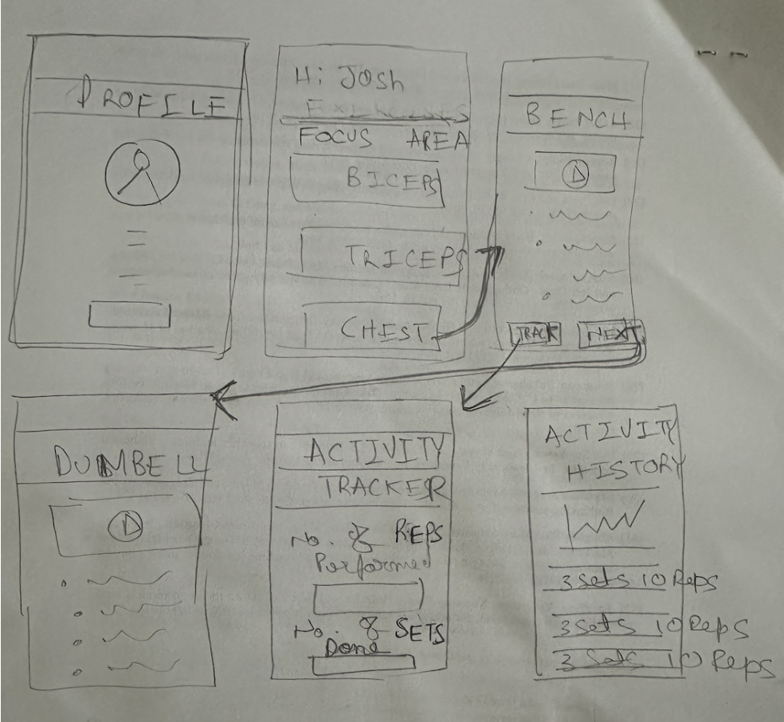

FitForm
Project Overview
Empowering your fitness journey through innovative mobile technology. FitForm is designed for individuals above the age of 18 who are ready to transform their lifestyle through structured exercise routines. With a focus on physical health's crucial role in enhancing life quality and longevity, FitForm harnesses the ubiquity and convenience of smartphones to deliver an accessible, effective fitness training tool right into the hands of users worldwide.
Key Features
- Interactive Exercise Guides: Each exercise is accompanied by detailed videos and step-by-step instructions to ensure users perform each movement correctly, minimizing the risk of injury and maximizing effectiveness.
- Performance Tracking: Users can log their sets, repetitions, and overall progress, which is vital for consistent physical development and personal motivation.
- Community Engagement: FitForm promotes a communal learning environment where users can connect, share experiences, and encourage one another, enhancing the social aspect of fitness.
- Mobile Accessibility: Chosen for its universal presence and ease of use, the mobile platform ensures that users can access their workouts anytime and anywhere, eliminating the need for expensive gym memberships or equipment.
- Prototyping with Figma: Initial concepts and user interface designs will be prototyped using Figma, enabling rapid iteration based on user feedback to refine the app's functionality and aesthetics.
- Educational Foundations: Rooted in constructivism, FitForm leverages practical application and scaffolded learning to build knowledge through direct experience, aligning with Nielsen’s usability heuristics and Meyer’s principles of multimedia design for an optimized user experience that is both simple and effective.
User Feedback Highlights
User 1: Emily: Emily is a 20-year-old undergraduate student majoring in Nutrition Science. She is relatively new to fitness and is looking for ways to incorporate regular exercise into her busy college schedule. Emily values clear instructions and visual aids due to her beginner level in physical activities.
Feedback: Emily appreciated the step-by-step instructions and the video demonstrations in the app, stating that they helped her understand how to perform exercises correctly without personal coaching. She found the activity tracker motivating as it allowed her to see her progress over time. However, Emily suggested incorporating a community feed where users can share their own progress and tips. She believes that a sense of community would make the fitness journey more engaging.
User 2: Jake : Jake is a 22-year-old undergraduate student studying Computer Science. He has some experience with gym workouts but often lacks consistency due to academic pressures. Jake looks for efficiency and effectiveness in his workouts, preferring exercises that can be done quickly but with maximum impact.
Feedback: Jake found the app helpful, particularly the videos that ensure he is using proper form, which he noted is crucial for preventing injuries. The activity tracker was a hit with him as well; he liked how it allowed him to track his progress and set fitness goals. Jake wanted a community feed and a group chat feature. He mentioned that integrating social features would not only help in building a supportive fitness community but also add a competitive element, motivating users to be more consistent with their workouts. Both students felt that these additional social features could enhance user engagement and provide a more comprehensive and interactive fitness platform.
Protoype V1

Protoype V2


Insights Learned that are part of Final Prototype
-
User 1 suggested including a community feed feature on the friends screen. This would allow users to stay updated on the activities and posts of their connections within the application.
- User 2 recommended incorporating a community feed and group chat functionality, similar to Facebook's features. This would facilitate community building and foster connections among users within the application.
After considering these insights, I decided to implement both suggestions in the final screen designs. The community feed and group chat features will enable users to engage with their connections, share updates, and participate in discussions, ultimately enhancing the overall user experience and fostering a sense of community within the application.
Final Version